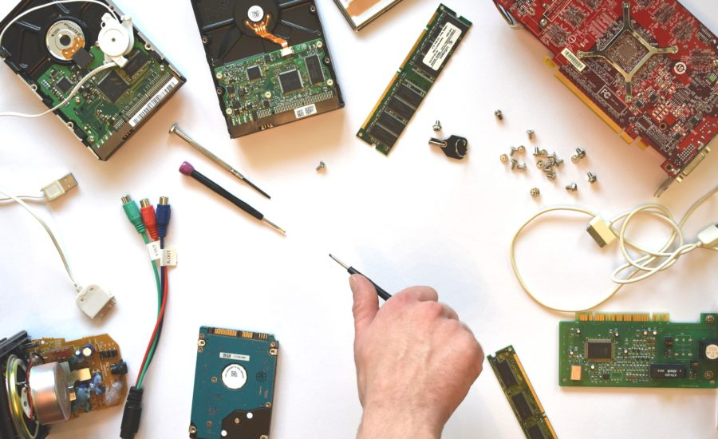

hardware e software:
Hardware e Software: una Sinergia Essenziale
Hardware e Software: una Sinergia Essenziale
L'informatica moderna si fonda su due elementi chiave: hardware e software. Questi due componenti, pur essendo distinti, collaborano in modo sinergico per creare l’infrastruttura che sostiene i dispositivi digitali e le tecnologie che utilizziamo ogni giorno.

1.Hardware : La Base Fisica
L’hardware comprende tutti i componenti fisici di un sistema informatico. Include tutto ciò che è tangibile, come il processore (CPU), la memoria RAM, il disco rigido, la scheda grafica e i dispositivi di input/output come tastiere, monitor e stampanti.
L’hardware si suddivide in diverse categorie:
Dispositivi di input: come tastiere, mouse e scanner, che consentono agli utenti di inserire dati.
Unità di elaborazione centrale (CPU): il cervello del computer, responsabile dell'esecuzione delle istruzioni dei programmi.
Memorie: sia RAM, per l’archiviazione temporanea dei dati, sia dispositivi di memoria permanenti come SSD e HDD.
Dispositivi di output: come monitor e stampanti, che permettono di visualizzare i dati elaborati.
In sintesi, l’hardware fornisce la "struttura" necessaria affinché il software possa operare.
2.Software : L’Intelligenza del Sistema

Il software, invece, rappresenta la componente "immateriale" che include programmi e applicazioni che indicano all’hardware come comportarsi. Esso si divide in:
Software di sistema: come il sistema operativo (Windows, macOS, Linux) che gestisce le risorse hardware e facilita l’interazione tra utente e macchina.
Software applicativo: come i browser, i programmi di videoscrittura, i videogiochi e le app mobili, progettati per soddisfare esigenze specifiche dell'utente.
Software di sviluppo: utilizzato per creare altri software, come i linguaggi di programmazione e gli ambienti di sviluppo integrato (IDE).
Il software è ciò che conferisce funzionalità all’hardware, traducendo le necessità dell’utente in comandi eseguibili.
Scheda Madre

La "scheda madre" è il cuore di un computer. Si tratta di una scheda di circuiti stampati che collega i componenti principali del sistema. Ecco alcuni aspetti fondamentali della scheda madre:
1. Processore (CPU): Il processore, montato sulla scheda madre, funge da "cervello" del computer, eseguendo istruzioni e calcoli.
2. Ram: La memoria ad accesso casuale (RAM) è collegata alla scheda madre e permette al computer di memorizzare temporaneamente i dati durante l'uso.
Periferiche di Input
Le periferiche di input sono dispositivi utilizzati per inserire dati e comandi nel computer. Alcuni esempi comuni includono:
1. Tastiera: Serve per inserire testo e comandi.
2. Mouse: Dispositivo di puntamento per interagire con l'interfaccia grafica.
3. Scanner: Converte documenti cartacei in formato digitale.
4. Microfono: Utilizzato per l'input audio.
5. Fotocamera: Permette di acquisire immagini e video.
Periferiche di Output
Le periferiche di output sono dispositivi che ricevono dati dal computer e li trasformano in una forma comprensibile per l'utente. Alcuni esempi comuni includono:
1. Monitor: Mostra le immagini e i contenuti grafici generati dal computer.
2. Stampante: Produce copie cartacee dei documenti digitali.
3. Altoparlanti: Riproducono il suono generato dal computer.
4. Proiettore: Mostra contenuti su una grande superficie, come uno schermo.
5. Cuffie: Offrono un'esperienza audio immersiva.

vai alla pagina indice